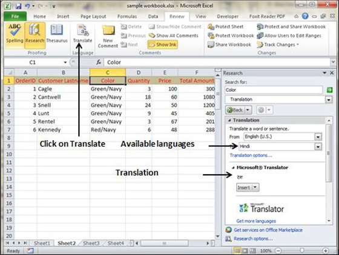

You can translate the text written in a different language, such as phrases or paragraphs, individual words (by using the Mini Translator), or translate your whole file with MS Excel.
Translation is available in the review tab of the ribbon in MS Excel. You can quickly translate cell into different language with this option.
Select the content, which you want to translate to a different language.
Choose review tab » translation.
It will open the pane from which you can select the language to which you need to translate.
You need to have an internet connection for performing translation. It will translate using the Microsoft Translator.
Click on Insert to apply translation changes.
